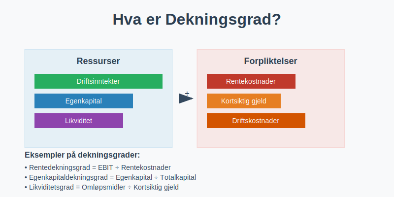
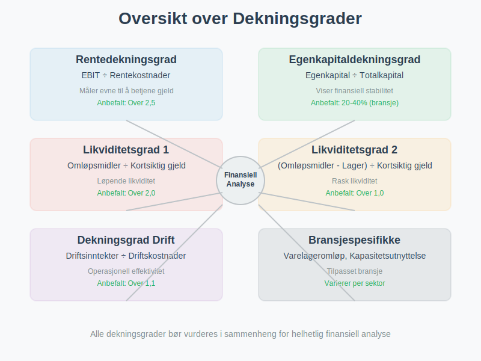
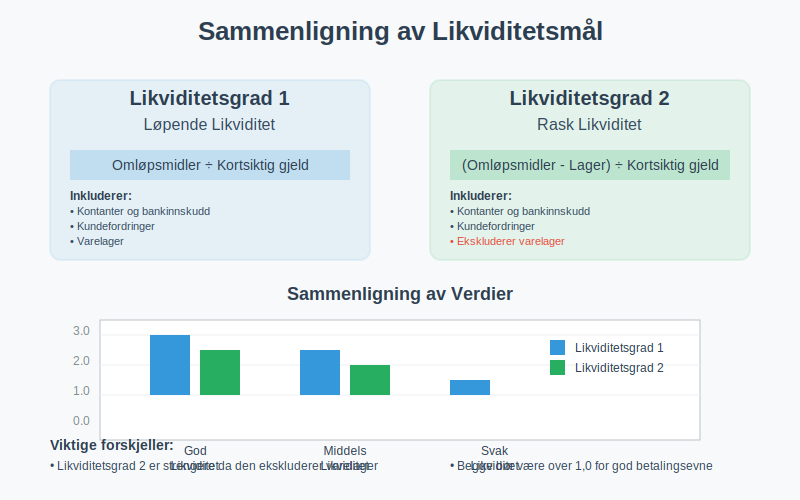
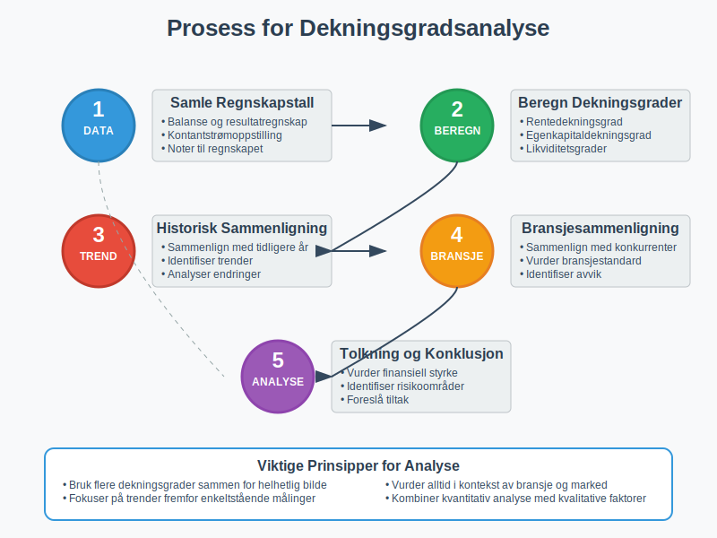
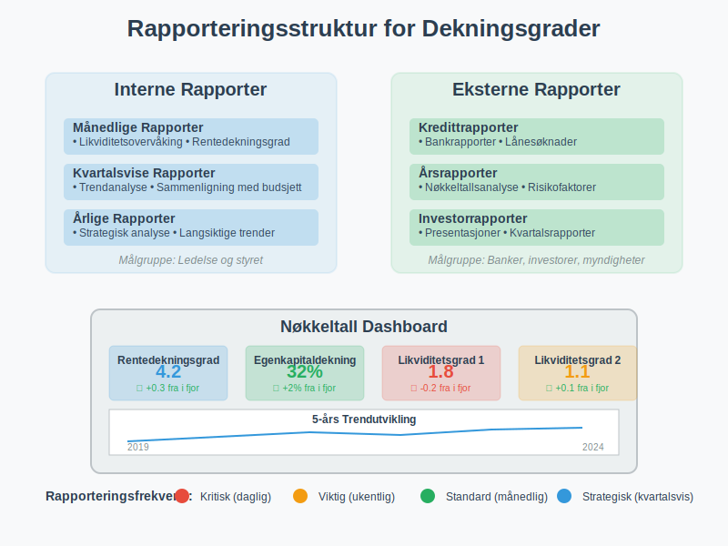
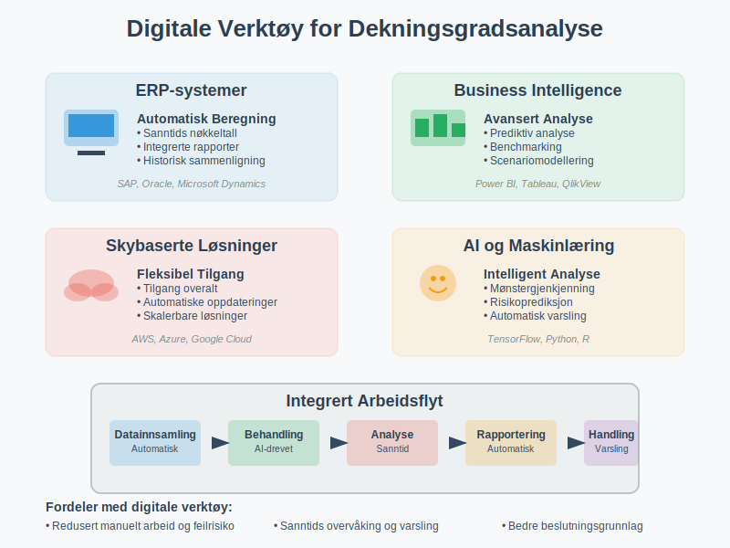

Dekningsgrad er et viktig finansielt nøkkeltall som måler en bedrifts evne til å dekke sine forpliktelser og kostnader. Dette begrepet omfatter flere ulike typer dekningsgrader som hver gir innsikt i forskjellige aspekter av bedriftens finansielle styrke og soliditet.

Hva er Dekningsgrad?
Dekningsgrad er en samlebetegnelse for finansielle nøkkeltall som måler hvor godt en bedrift kan dekke sine forpliktelser med tilgjengelige ressurser. Disse nøkkeltallene er essensielle for:
- Kredittvurdering og låneopptak
- Investeringsbeslutninger og risikovurdering
- Finansiell planlegging og budsjettering
- Sammenligning med konkurrenter og bransjestandard
- Overvåking av finansiell utvikling over tid
Grunnleggende Prinsipper
Dekningsgrader bygger på forholdet mellom ressurser og forpliktelser:
- Høy dekningsgrad indikerer god finansiell styrke
- Lav dekningsgrad kan signalisere finansiell risiko
- Trendanalyse er viktigere enn enkeltstående målinger
- Bransjesammenligning gir kontekst for tolkning
Typer Dekningsgrader
Det finnes flere viktige typer dekningsgrader, hver med sitt spesifikke formål og beregningsmetode.

Rentedekningsgrad
Rentedekningsgrad måler bedriftens evne til å betale rentekostnader med driftsresultatet.
Formel for Rentedekningsgrad:
Rentedekningsgrad = Driftsresultat før renter og skatt (EBIT) ÷ Rentekostnader
Tolkning av Rentedekningsgrad:
| Rentedekningsgrad | Vurdering | Betydning |
|---|---|---|
| Over 5,0 | Meget god | Svært lav finansiell risiko |
| 2,5 - 5,0 | God | Akseptabel finansiell risiko |
| 1,5 - 2,5 | Middels | Moderat finansiell risiko |
| 1,0 - 1,5 | Svak | Høy finansiell risiko |
| Under 1,0 | Kritisk | Kan ikke dekke rentekostnader |
Eksempel: Rentedekningsgrad
En bedrift har følgende tall fra resultatregnskapet:
- Driftsresultat (EBIT): 2.500.000 kr
- Rentekostnader: 500.000 kr
Beregning: Rentedekningsgrad = 2.500.000 ÷ 500.000 = 5,0
Dette indikerer at bedriften har god evne til å dekke sine rentekostnader.
Egenkapitaldekningsgrad
Egenkapitaldekningsgrad måler hvor stor andel av totalkapitalen som er finansiert med egenkapital.
Formel for Egenkapitaldekningsgrad:
Egenkapitaldekningsgrad = Egenkapital ÷ Totalkapital × 100%
Bransjestandarder for Egenkapitaldekningsgrad:
| Bransje | Anbefalt minimum | Kommentar |
|---|---|---|
| Handel | 20-30% | Lavere kapitalkrav |
| Industri | 30-40% | Moderate kapitalkrav |
| Eiendom | 25-35% | Avhenger av finansieringsstruktur |
| Teknologi | 40-60% | Høyere risiko krever mer egenkapital |
| Bank/Finans | 8-12% | Regulerte krav |
Likviditetsdekning
Likviditetsdekning måler bedriftens evne til å dekke kortsiktige forpliktelser.

Likviditetsgrad 1 (Løpende likviditet):
Likviditetsgrad 1 = Omløpsmidler ÷ Kortsiktig gjeld
Likviditetsgrad 2 (Rask likviditet):
Likviditetsgrad 2 = (Omløpsmidler - Varelager) ÷ Kortsiktig gjeld
Tolkning av Likviditetsgrader:
| Nøkkeltall | Anbefalt verdi | Betydning |
|---|---|---|
| Likviditetsgrad 1 | Over 2,0 | God betalingsevne |
| Likviditetsgrad 2 | Over 1,0 | God likviditet uten varelager |
Dekningsgrad for Driftskostnader
Dekningsgrad for driftskostnader måler hvor godt inntektene dekker de løpende kostnadene.
Formel:
Dekningsgrad driftskostnader = Driftsinntekter ÷ Driftskostnader
Eksempel: Dekningsgrad Driftskostnader
En bedrift har:
- Driftsinntekter: 10.000.000 kr
- Driftskostnader: 8.500.000 kr
Beregning: Dekningsgrad = 10.000.000 ÷ 8.500.000 = 1,18
Dette betyr at inntektene dekker driftskostnadene med 18% margin.
Beregning og Analyse
Datakilder for Beregning
Dekningsgrader beregnes basert på tall fra:
- Balansen - for kapitalstruktur og eiendeler
- Resultatregnskapet - for inntekter og kostnader
- Kontantstrømoppstilling - for likviditetsanalyse
- Noter til regnskapet - for detaljert informasjon
Praktisk Fremgangsmåte
- Samle relevante regnskapstall
- Beregn aktuelle dekningsgrader
- Sammenlign med tidligere perioder
- Vurder mot bransjestandard
- Analyser trender og utvikling

Faktorer som Påvirker Dekningsgrader
Positive Faktorer:
- Økte inntekter fra kjernevirksomhet
- Kostnadsreduksjoner og effektivisering
- Forbedret arbeidskapital
- Redusert gjeldsbelastning
- Økt egenkapitalandel
Negative Faktorer:
- Fallende omsetning eller marginer
- Økte rentekostnader
- Høyere driftskostnader
- Økt gjeldsgrad
- Dårlig likviditetsstyring
Bransjespesifikke Dekningsgrader
Detaljhandel
Detaljhandel har spesielle dekningsgrader:
- Varelageromløp = Varekostnad ÷ Gjennomsnittlig varelager
- Bruttomargindekning = Bruttofortjeneste ÷ Driftskostnader
- Husleiedekning = Driftsinntekter ÷ Husleiekostnader
Industri
Industriselskaper fokuserer på:
- Kapasitetsutnyttelse = Faktisk produksjon ÷ Maksimal kapasitet
- Dekningsgrad faste kostnader = Dekningsbidrag ÷ Faste kostnader
- Investeringsdekning = Kontantstrøm fra drift ÷ Investeringer
Eiendom
Eiendomsselskaper bruker:
- Leieinntektsdekning = Leieinntekter ÷ Finanskostnader
- Belåningsgrad = Gjeld ÷ Markedsverdi eiendommer
- Driftsmargindekning = Netto driftsinntekter ÷ Driftskostnader
Regnskapsføring og Rapportering
Regnskapsføring av Dekningsgrader
Dekningsgrader er ikke regnskapsførte poster, men beregnede nøkkeltall basert på regnskapsdata:
Ikke regnskapsført bilag - kun beregning og analyse
Rapportering til Interessenter
Interne Rapporter:
- Månedlige dekningsgradsanalyser
- Kvartalsvis trendrapportering
- Årlig strategisk analyse
Eksterne Rapporter:
- Årsrapport med nøkkeltallsanalyse
- Kredittrapporter til banker
- Investorpresentasjoner

Forbedring av Dekningsgrader
Strategier for Bedre Rentedekningsgrad
-
Øk driftsinntektene:
- Øk salgsvolum eller priser
- Utvid til nye markeder
- Forbedre produktmiks
-
Reduser driftskostnadene:
- Effektiviser driften
- Automatiser prosesser
- Forhandle bedre leverandøravtaler
-
Optimaliser finansieringsstrukturen:
- Refinansier dyr gjeld
- Øk egenkapitalandelen
- Bruk avtalegiro for bedre kontantstrøm
Forbedring av Likviditetsdekning
Kortsiktige Tiltak:
- Raskere innkreving av kundefordringer
- Forhandling om lengre betalingsfrister med leverandører
- Reduksjon av varelager
- Etablering av kredittlinjer
Langsiktige Tiltak:
- Forbedret budsjettplanlegging
- Diversifisering av inntektskilder
- Investering i mer effektive systemer
- Oppbygging av finansielle reserver
Dekningsgrader i Kredittvurdering
Bankenes Vurderingskriterier
Banker vurderer dekningsgrader som del av kredittvurderingen:
| Dekningsgrad | Vekt i vurdering | Kritiske verdier |
|---|---|---|
| Rentedekningsgrad | Høy | Under 1,5 |
| Egenkapitaldekningsgrad | Høy | Under 20% |
| Likviditetsgrad 1 | Middels | Under 1,2 |
| Likviditetsgrad 2 | Middels | Under 0,8 |
Påvirkning på Lånevilkår
Gode Dekningsgrader:
- Lavere rente på lån
- Høyere låneramme
- Færre sikkerhetskrav
- Mer fleksible vilkår
Svake Dekningsgrader:
- Høyere rente og gebyrer
- Strengere sikkerhetskrav
- Lavere låneramme
- Hyppigere oppfølging
Internasjonale Standarder
IFRS og Dekningsgrader
Under IFRS (International Financial Reporting Standards) er det spesielle krav til:
- Konsistente beregningsmetoder
- Sammenlignbare presentasjoner
- Tilstrekkelig noteopplysninger
- Sensitivitetsanalyser
Sammenligning med Internasjonale Selskaper
Ved sammenligning med utenlandske selskaper må man vurdere:
- Ulike regnskapsstandarder (IFRS vs US GAAP vs lokale standarder)
- Valutaeffekter og omregning
- Bransjeforskjeller mellom land
- Skattemessige forskjeller
Digitale Verktøy og Automatisering
Regnskapssystemer med Nøkkeltallsberegning
Moderne regnskapssystemer tilbyr automatisk beregning av dekningsgrader:
- Sanntidsberegning basert på løpende regnskapsdata
- Trendanalyse og historisk sammenligning
- Varsling ved kritiske verdier
- Automatisk rapportering til ledelse og eiere
Business Intelligence og Analyse
Avanserte Analyseverktøy:
- Dashboard med sanntids nøkkeltall
- Prediktiv analyse for fremtidige dekningsgrader
- Benchmarking mot bransjen
- Scenarioanalyse for ulike utviklingsalternativer

Vanlige Feil og Fallgruver
Beregningsfeil
Typiske Feil:
- Feil tidsperiode - blanding av årstall eller perioder
- Inkonsistente definisjoner - ulike beregningsmetoder over tid
- Manglende justeringer - ekstraordinære poster ikke eliminert
- Feil datakilder - bruk av foreløpige vs endelige regnskapstall
Tolkningsfeil
Vanlige Misforståelser:
- Isolert vurdering - ikke sammenligning med bransje eller historie
- Overforenkling - ikke hensyn til spesielle omstendigheter
- Kortsiktig fokus - ikke vurdering av langsiktige trender
- Manglende kontekst - ikke hensyn til konjunkturer eller markedsforhold
Dekningsgrader og Risikostyring
Finansiell Risikostyring
Dekningsgrader er sentrale i finansiell risikostyring:
Risikoidentifikasjon:
- Likviditetsrisiko - lav likviditetsdekning
- Kredittrisiko - svak rentedekningsgrad
- Operasjonell risiko - lav dekningsgrad for driftskostnader
- Markedsrisiko - volatilitet i dekningsgrader
Risikotiltak:
- Etablering av finansielle buffere
- Diversifisering av finansieringskilder
- Implementering av avstemmingsrutiner
- Regelmessig overvåking og rapportering
Compliance og Regulatoriske Krav
Lovpålagte Krav:
- Aksjeloven - krav til soliditet
- Regnskapsloven - krav til noteopplysninger
- Skatteloven - dokumentasjon av finansiell stilling
- Bransjespesifikke reguleringer
Fremtidige Trender
Teknologisk Utvikling
Nye Muligheter:
- Kunstig intelligens for prediktiv analyse
- Maskinlæring for mønstergjenkjenning
- Blockchain for transparent rapportering
- IoT-sensorer for sanntidsdata
Regulatoriske Endringer
Forventede Utviklinger:
- Økt fokus på bærekraft - ESG-relaterte dekningsgrader
- Strengere rapporteringskrav - mer detaljert analyse
- Harmonisering av internasjonale standarder
- Digitalisering av regulatorisk rapportering
Konklusjon
Dekningsgrader er essensielle verktøy for å vurdere og overvåke en bedrifts finansielle helse. Ved å forstå og anvende ulike typer dekningsgrader kan bedriftsledere, investorer og kreditorer ta bedre informerte beslutninger.
Viktige Takeaways:
- Rentedekningsgrad måler evnen til å betjene gjeld
- Egenkapitaldekningsgrad viser finansiell stabilitet
- Likviditetsdekning indikerer kortsiktig betalingsevne
- Trendanalyse er viktigere enn enkeltstående målinger
- Bransjesammenligning gir nødvendig kontekst
- Regelmessig overvåking er kritisk for finansiell styring
Gjennom systematisk bruk av dekningsgradsanalyse kan bedrifter identifisere risikoområder tidlig, optimalisere sin finansielle struktur og sikre langsiktig bærekraft i sin virksomhet.